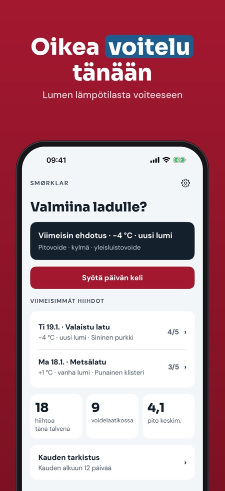
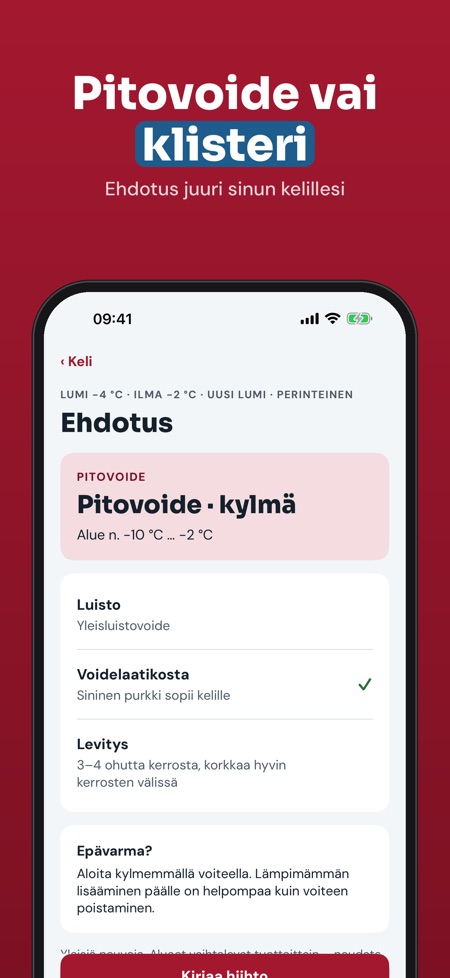
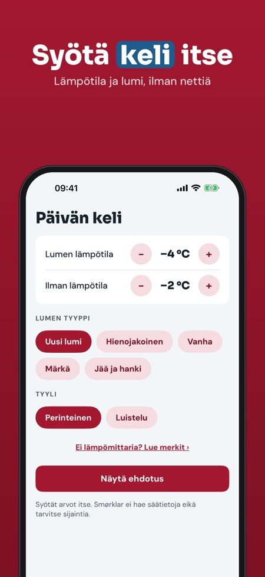

Pitovoide, klisteri ja luisto. Syötä lumen lämpötila ja keli, saat oikean voideluokan – pitovoide tai klisteri. Voidelaatikko ja voitelupäiväkirja, myös ilman nettiä ladulla.



Smørklar auttaa valitsemaan voitelun murtomaahiihtoon: syötät lumen ja ilman lämpötilan sekä lumen tyypin ja saat ehdotuksen pito- ja luistovoiteluun.
Kylmän kelin ehdotus, 5 voidetta voidelaatikossa ja vinkit ilman lämpömittaria ovat käytössä ilman ostoa. Täysi versio on kertaosto, joka avaa kaikki kelit, klisterioppaan, rajattoman päiväkirjan ja kauden tarkistuksen. Ei tilausta.
Smørklar antaa yleisiä neuvoja eikä ole sidoksissa mihinkään voidemerkkiin. Noudata aina valmistajan ohjeita. Sovellus ei hae säätietoja.